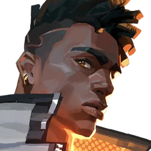
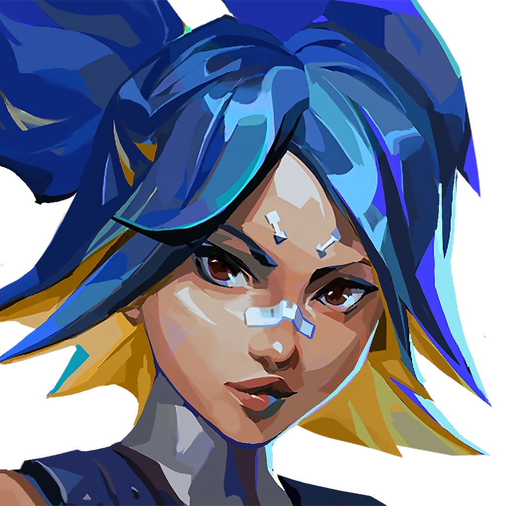

VALORANT
Recommended Duelist Agents for Beginners
- Phoenix -
Phoenix is one of the starter duelists. He has almost every ability needed for a duelist in the game. He has a flash to blind enemies, a wall for covering sight, and a molly for holding off angles
When Phoenix also comes in contact to his fire, he regenerates HP. His ultimate ability allows him to go in a free form wherein if he dies, he gets revived.
- Neon -
Neon is also good for beginners because she too has walls for covering sight, and a stun that may hit enemies. Her ultimate ability allows her to shoot lazers while running around.
Her best ability however, is her super speed that allows her to run faster than most people. This allows her to juke people out or race them to the site.
- Reyna -

Reyna is one of the "greedy" duelists. Her utils are easy to understand and are all for herself except her blind
She has a blind that may block enemies sight, and she gets a dismiss/heal every time she kills someone. Her ult allows her to shoot, reload and automatically heal faster. She also gets infinite dismisses/heal
Because of these fighting abilities, she's expected to enter site first and kill everyone.
-----------------------------
-----------------------------
-----------------------------------------------------------------------
Copyright © EAM Vibal 2025